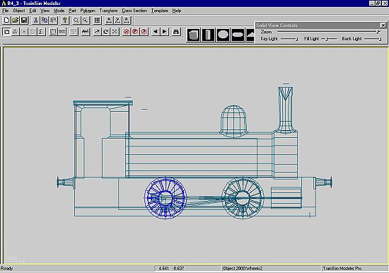

Constructing A Steam Loco Using Train Sim Modeler
Part 6
by Richard Osborne
Texturing
Breath a sigh of relief - TSM is far the simplest of the 3d programs when it comes to texturing. It has a price - some texturing features which the other programs can manage are impossible in TSM.
It's worth finding & following threads in the forums - some go into far greater detail than I will here. I want to get you up & running with a loco which you built & textured.
As with the loco itself its worth finding as much reference as possible. Locos varied enormously during their working lives - if you can find a photo of a particular loco at a particular time so much the better. If you're making a Bulleid Light Pacific with a Geisl ejector it makes sense to number it 34064. Mind you we're in Fantasy Land - you can have Thomas the Tank Engine on the Main Line if you wish - just anticipate a full email box if you make a blatant error.
To business: we need textures for our locos. We MUST have textures which are 64*64, 128*128, 256*256 or 512*512 pixels. TSM & MSTS only accept texture files with these size values. It's rumoured that TSM accepts 1024*1024 - it hasn't for me! You'll find that 512*512 is perfectly satisfactory for our needs. By definition one 1024*1024 file is the size of four 512*512 files. We'll use two sheets, probably with another 256*256 sheet for the wheels. Be prepared to shuffle & change them; we want to get as much on our sheets as possible. One of my dislikes is to download a model & then find MSTS has to heave a large file with just an axlebox on it! Such models don't stay on my computer long.
Again I'll make the point - this is just one way of texturing - dozens of other people have dozens of other ways.
Before we start: I'll be using Paint Shop Pro for the artwork. Any decent paint program will do the job perfectly well, it has to be able to handle .bmp & .tga formats with the ability to handle alpha channels for the transparencies. There are plenty of freeware programs, at sites like moochers.com, which are perfect. I have a facility called "ClipMate" which is an extended clipboard, I can keep dozens of images ready for use. I can't handle any computer without such a program - makes it about a million times better. This was shareware & was the best $20 I've spent on my computer. It's possible there's a freeware version somewhere. Please find one & be familiar with it asap. I have to assume an extended clipboard is in use.
A screenshot, on ClipMate, of Clipmate.
I hope you've looked at the texture files which come with MSTS - in the 'samples' subdirectory. The first thing you notice is that they bear no resemblance to any loco on your computer - you recognize bits - a smokebox, a cabside etc. The placements appear to be all over the shop. This is a 512*512 file. I've never seen rivets through a boiler band - but that's another topic entirely!
This is a .jpg image, .jpg doesn't handle alpha channels - you have the original .tga file. You'll see the boiler, firebox underneath, only one cabside; how do they use it for the other side?
Notice the splasher - TSM can't turn part of the image through 90 Degrees.
For the starting point for our B4 we'll use the .bmp files we used for the loco model. You have another source - TSM itself; a screen shot can be very useful especially if your source .bmp file isn't very good. Use 'Alt' + 'Print Screen' for a screen grab at any time.

We're using a decent .bmp so we'll have to chop it up & fit it to our 512*512 screen. It's perfectly possible to stretch & compress the image, bringing them back to ratio in TSM. I prefer, if at all possible, to keep things to the true ratio, especially if any lining or lettering is involved.
Some sketching & imagination will be good. I know our longest part will be the frame sides & valances. It needs to be from the rab roof to the sandpipe in depth. If we cut the drawing & resize to 512 wide we should start to make progress.
The frame, if the drawing maintains the ratio, is 512 * 238. We must add 274 to the depth.
Using the rectangular selection tool - move the part above the footplate upwards out of the way. Pick the area below the footplate as far as the base of the steps - press 'Ctrl' + 'c' to copy to clipboard - then 'Ctrl' + 'e' to 'Paste as New Selection'. Position it above the original drawing.
Notice I've introduced, in the same way, parts from the front view. Be prepared to do quite a lot of jiggling & juggling. The two cab fronts will be front & rear view. It'll look a bit odd until I've reworked & coloured them. The file has been saved as B4_1.tga.
I'll go back to our simple B4 & start the texturing, normally I'd texture as I go - better than looking at a boring grey loco!
Notice I've joined the tank sides to the cab - the texture will fit at one sitting. Make the cab side current, this is cab_st; the right side. Press 'F4', a screen appears.
We need to browse & find our texture file for the 'Right' assign. Ignore the others for the time being.
A screen showing the file appears - press 'OK' & the file itself appears bigger on another screen. You'll find that you can select any rectangle within the square screen. The actual coordinates appear on the right. Roughly select the area of the cab then adjust more precisely with the nudge buttons. Fix the 'Crop' first - then 'Size'.
The first bit of texture on our B4.
Make the other cab side current & repeat the process as far as selecting the area of the texture file THEN if you look below the coordinate readout you'll see two tick boxes - Invert X & Invert Y. This is the left side so we want to 'Invert X'.
Not surprisingly the lettering is backwards. We're not going to use direct lettering - we'll use a transparent panel. If you use direct lettering you'll need a left & right image - more files or less quality! If you look at the coach textures in the MSTS samples directory you'll see that the lettering is far bigger than you'd expect. We'll use the same technique.
Do the same thing for the the cab front & rear - 4 faces. If you remember we made them alphanorm+ & alphanorm-.
We'll take the bull by the horns & tackle the thorny subject of transparency.